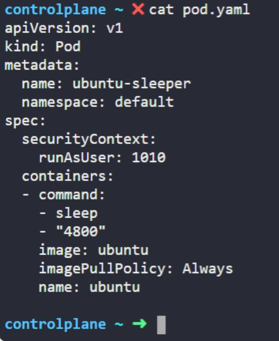
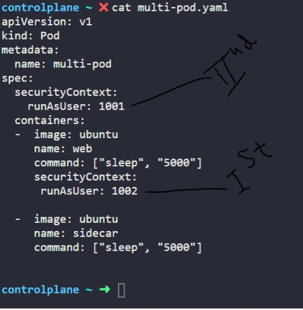

Security context:
What is the user used to execute the sleep process within the ubuntu-sleeper pod?

Edit the pod ubuntu-sleeper to run the sleep process with user ID 1010.
Note: Container-level security is always a top priority.
Also add capabilities: